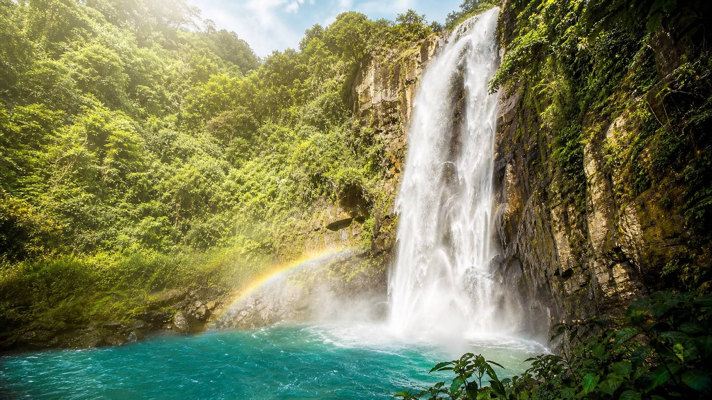
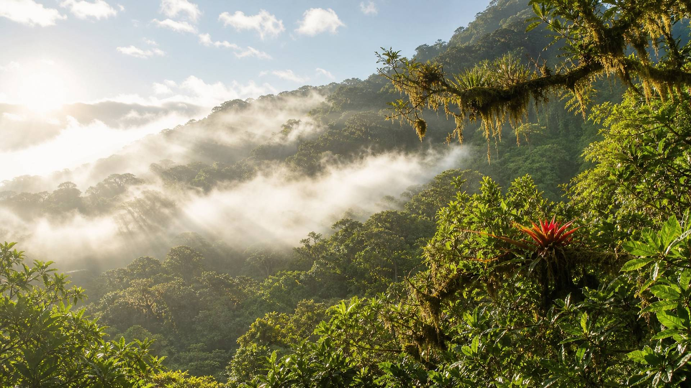
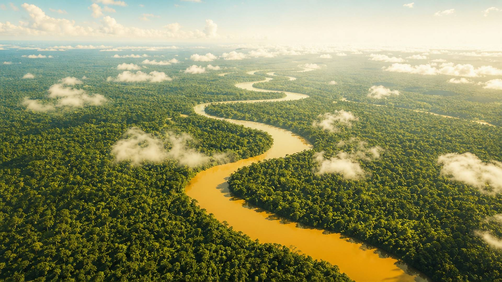
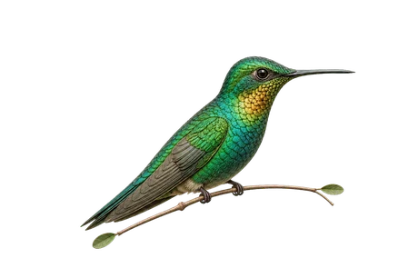

Kawsaypac · An Ecuadorian descent
From the summit to your cup
Follow one blend down 5,647 metres, from Cotopaxi's ice to the Amazon floor, through the hands that gather it.
4,100 m · Páramo
Kawsaypac means for life. Every pouch begins in the wild, with the healers who know these plants best, and ends in your daily ritual. We take only what the land can give.
"The land teaches. The plants heal. We are only here to listen."
3,400 m · What the mountain grows
Three promises, kept at altitude
-
01
Wildcrafted
No rows, no greenhouses. Plants gathered where they chose to grow, at the altitude they prefer.
-
02
Small batch
Blended by hand in batches you can count. Freshness is the whole point.
-
03
Direct partners
We work directly with Indigenous harvesters in the Andes and the Amazon, and pay fairly.


2,600 m · Bosque Nublado
Seven blends made on the way down
Each one built for a single job, priced plainly, covered by a 30-day happiness guarantee.


Not sure where to start?
The apothecary sorts every blend by the concern it serves.
Browse the full apothecary


1,400 m · Cascada
The forest closes overhead. The air turns to water.



900 m · Selva Alta · The people
The descent is made of hands
"We are Raisa and Brian. What started as a move to Ecuador became a calling: the plants that have kept families here well for generations deserve to be honored, not forgotten."
Every pouch is a bridge between their wisdom and your kitchen.
Read our full story
"These blends have truly transformed my energy and wellbeing."
"I started for the sleep blend. I stayed because I finally understood what I was putting in my body."
Real customers, photographed with consent. Full names shared only with their permission.
250 m · Amazonía · Basecamp
You have arrived
The descent ends where the plants begin. Take a blend home, or come walk the trail yourself.
- 30-day happiness guarantee
- Free US shipping over $75
- Small-batch freshness